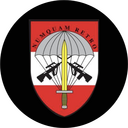
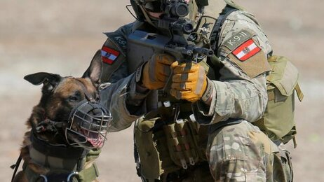

Jagdkommando
- What are they used for?
- Counter-Terrorism
- Reconnaissance
- To free hostages
- Building protection of embassies abroad
- What do you need to do to be accpeted?
- 8 km express march with 20 kg backpack over undulating terrain in a maximum of 60 minutes
- 30 m rope climbing in an inclined rope
- 300 m swimming in clothes (without shoes) in 11 minutes
- Jump into water from a height of 10 m on command without delay
- Obstacle course under 5:10 minutes
- At least 6 pull-ups in 60 seconds
- At least 48 squats in 120 seconds
- At least 31 pushups in 120 seconds
- At least 25 sit-ups in 120 seconds
- At least 19 squat jump jumps in 60 seconds
- 2400m run in less than 12 minutes
- Psychological and sensorimotor aptitude assessment
- Exercise for performance and motivation
- Passing the full contact fight
- How are they equipped?
- You don't know exactly how they are equipped, but you know that they use a Steyr AUG

